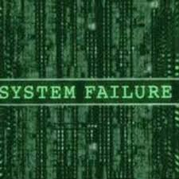
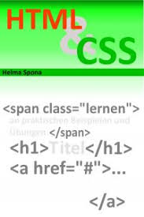

Hochschule der Medien - Stuttgart
Modul: Web Technologie
|  | Herzlich willkommen zur Lehrveranstaltung Web-Technologie! Diese Lehrveranstaltung soll Ihnen grundlegende Einblicke in ausgewählte Themen des World Wide Web (kurz: WWW) vermitteln. In diesem Abschnitt finden Sie organisatorische Hinweise, die zur Vorbereitung oder für die gesamte Kursdauer von Bedeutung sind. Das World Wide Web (WWW) ist heute die Informationsinfrastruktur von globaler Bedeutung. Auch die Wirtschaftsinformatik hat großen Anteil an der Realisierung und den Betrieb von Informationssystemen im WWW. Um dies effektiv tun zu können, benötigen Sie Kenntnisse in den technischen Grundlagen des World Wide Web. |
Grundlagenkurs Die Lehrveranstaltung gliedert sich in 2 SWS Vorlesung und 2 SWS Übung. Die Übungen werden wie die Vorlesung als Frontalverantaltung durchgeführt. Je nach Übungsgegenstand erhalten Sie eine Wochenaufgabe, die Ihnen fallweise vor oder nach Ihrer Bearbeitung durch die Dozenten oder Tutoren erläutert wird.
Hinweis und Aufruf
|
 |
Als Fortsetzung der Software-Entwicklung und in Vorbereitung auf ein umfangreicheres Projekt werden weitere wichtige Bestandteile von Java vorgestellt. Darüberhinaus spielen Server-basierte Java-Technologien und Software-Entwicklungswerkzeuge eine wichtige Rolle in dieser Lehrveranstaltung. Von den Teilnehmern wird erwartet, dass sie den Inhalt der Vorlesung eigenständig nacharbeiten und in Form selbstgewählter Szenarien übend vertiefen.